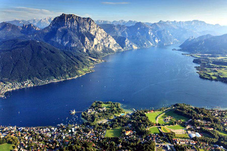

see
see
magassága


| tó neve | Attersee | Traunsee | Mondsee | Wolfgang- see |
Hallstäter see |
Velencei-tó |
|---|---|---|---|---|---|---|
| vízfelülete | 45,9 km 2 | 24,5 km 2 | 14,2 km 2 | 12,8 km 2 | 8,6 km 2 | 25,8 km 2 |
| tszf. magassága |
469 m | 423 m | 481 m | 538 m | 508 m | 100 m |
| legnagyobb mélysége | 171 m | 191 m | 68 m | 114 m | 125 m | 2 m |
| legnagyobb városa | Seewalchen | Gmunden | Mondsee | St. Gilgen | Hallstatt | |
| egyedisége | legnagyobb | legmélyebb | legmelegebb | legszebb | leghidegebb | |
| fotó | |
 | |
|
|
|